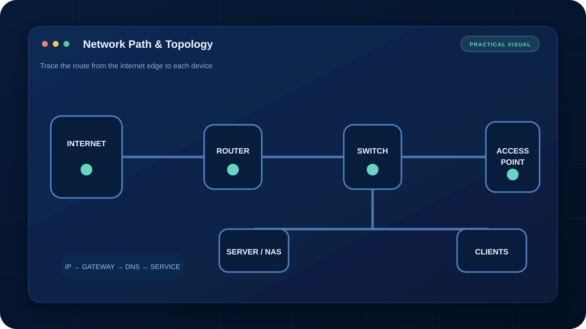

การเปิด Port สู่ระบบควบคุม กล้อง หรือ NAS โดยตรงมีความเสี่ยง ควรใช้ VPN, จำกัดสิทธิ์ และอัปเดตอุปกรณ์ก่อนเปิดใช้งานจากอินเทอร์เน็ต
ซิมมือถือและอินเทอร์เน็ตบางแพ็กเกจใช้ CGNAT ทำให้ Router ไม่ได้รับ Public IP จึงทำ Port Forward แบบปกติไม่ได้ แม้ตั้งค่าใน Router ถูกต้อง
1. ตรวจว่าเป็น CGNAT หรือไม่
เปรียบเทียบ WAN IP ใน Router กับ IP ที่เว็บไซต์ตรวจพบ หากไม่ตรงกัน หรือ WAN IP อยู่ในช่วง Private/Shared Address เช่น 100.64.0.0/10 มีโอกาสอยู่หลัง CGNAT
2. ทำไม Port Forward ไม่ทำงาน
Port Forward ควบคุมได้เฉพาะ Router ของเรา แต่ CGNAT ยังมี Router ของผู้ให้บริการอยู่อีกชั้น การเชื่อมต่อจากภายนอกจึงเข้ามาไม่ถึงอุปกรณ์ปลายทาง
3. ทางเลือกที่เหมาะสม
- ขอ Public IP หรือ Static IP จากผู้ให้บริการ
- ใช้ Overlay VPN ที่อุปกรณ์ภายในเชื่อมออกไปหา Coordinator
- ตั้ง Site-to-Site VPN ไปยังจุดที่มี Public IP
- ใช้ Cloud Relay ของผู้ผลิตเมื่อประเมินความปลอดภัยแล้ว
4. Checklist ก่อนใช้งานจริง
แยก VLAN ของอุปกรณ์ควบคุม เปลี่ยนรหัสเริ่มต้น เปิด MFA ถ้ามี จำกัดผู้ใช้และเส้นทางที่เข้าถึง เก็บ Log และมีวิธีตัดการเชื่อมต่อฉุกเฉิน ไม่ควรเปิดหน้า Admin สู่สาธารณะโดยตรง
คำถามที่พบบ่อย
Port Forward ใช้ได้เมื่ออยู่หลัง CGNAT หรือไม่?
โดยทั่วไปไม่ได้ เพราะผู้ใช้ไม่ได้ถือ Public IPv4 โดยตรง ควรขอ Public IP หรือใช้ VPN ที่เชื่อมออกจากภายใน
ควรเปิดพอร์ตกล้องหรือ NAS ตรงสู่อินเทอร์เน็ตไหม?
ไม่แนะนำ ควรเข้าผ่าน VPN พร้อม MFA และจำกัดสิทธิ์ให้เท่าที่จำเป็น